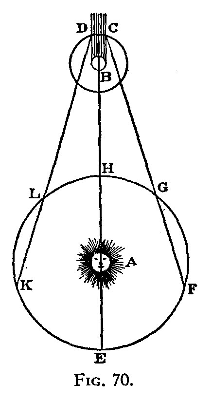
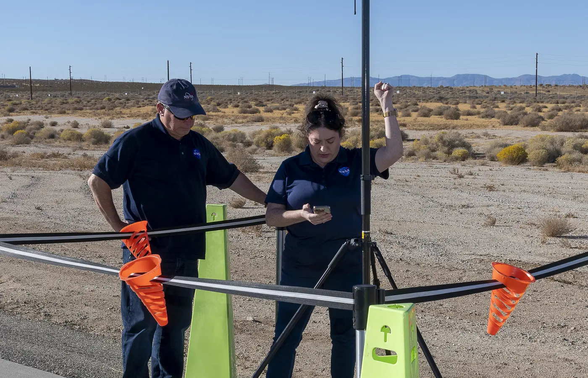
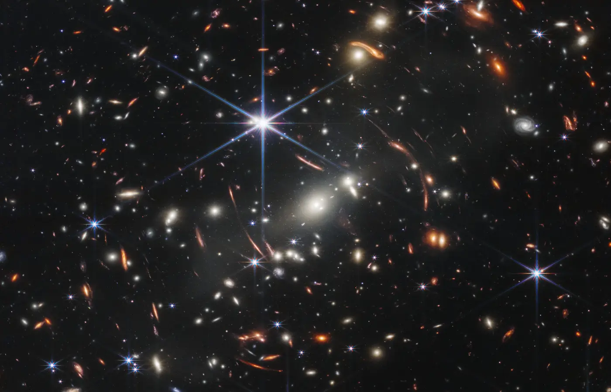

Light travels at exactly 299,792,458 metres per second in a vacuum. More fundamentally, c is the fastest speed at which information, energy, or cause and effect can propagate locally. Understanding this one constant connects space communication, telescopes, GPS, and Einstein's theory of relativity.
1.28 sLight-time from Earth to the Moon.
8m 20sThe Sun you see is already eight minutes old.
4.37 yOne-way message time to the nearest star system.
The Speed of Light — c
Physicists use the letter c (associated with the Latin celeritas, meaning swiftness) to represent the speed of light in a vacuum. It is now one of the defining constants of the International System of Units.
c
299,792,458 m/s
≈ 300,000 km/s · ≈ 186,282 miles/s
Its numerical value is exact in SI units because the metre is defined using c.
To put that in perspective: in one second, light travels nearly 7.5 times around Earth and reaches the Moon in about 1.28 seconds. In one minute it could cross the average Earth–Moon distance about 47 times. Sunlight reaches Earth in about 8 minutes 20 seconds.
How does it compare to things we know?
Logarithmic scale: each step represents a multiplication in speed, allowing vastly different speeds to remain visible.
Walking pace
1.4 m/s
Commercial jet
250 m/s
Sound (in air)
343 m/s
ISS in orbit
7,700 m/s
Speed of light c
3×10⁸ m/s
How Long Does Light Take to Travel?
Light is incredibly fast — but the universe is so enormous that even light takes a long time to cross it. These travel times reveal just how vast space really is.
Destination
Distance
Light travel time
What that means
Moon
384,400 km
1.28 seconds
Apollo astronauts had a 2.6s radio delay talking to Earth
Sun
150 million km
8 min 20 sec
If the Sun vanished, we wouldn't know for 8 minutes
Mars (closest)
~55 million km
~3 minutes
Mars rovers can't be remotely steered in real time
Jupiter
~630 million km
~35 minutes
Commands to Juno spacecraft take 35+ minutes one way
Pluto
~5.9 billion km
~5.5 hours
New Horizons flyby images took hours to arrive
Proxima Centauri
4.24 light-years
4.24 years
We see the nearest star as it was a little over four years ago
Andromeda Galaxy
2.5 million light-years
2.5 million years
That light left when early humans first walked the Earth
Cosmic microwave background
Source region now ~46 billion ly away
~13.8 billion years
Space expanded while the light traveled, so present distance and travel time differ
What is a light-year? A light-year is not a unit of time — it is a unit of distance. It is the distance light travels in one year: about 9.46 trillion kilometres (9.46 × 10¹² km). Astronomers use light-years because numbers like "40 trillion kilometres" are too unwieldy. Saying "Proxima Centauri is 4.24 light-years away" is much cleaner.
Cosmic Lookback Timeline
Choose a source to connect distance with the age of the light arriving now. The axis is logarithmic so seconds and billions of years can share one view.
NowEarly universe
Swipe to travel farther back →
8 min 20 secLookback time
The Sun
The sunlight reaching your eyes now left the Sun about eight minutes ago. You never see the Sun exactly as it is “right now.”
Signal Delay Decision Lab
Pick a destination and compare one-way light time, round-trip delay, and what engineers can realistically control live.
Two-way communication pathTime-compressed · 6 min represented
E
R
Yellow travels outward; blue represents the reply. Animation speed is illustrative, not real time.
One-way3.0 min
Round trip6.0 min
Live control?No
A Mars rover needs autonomy: by the time a driver sees a rock, sends a turn command, and receives confirmation, several minutes have passed.
Light-Travel Simulator: Time-Compressed Model
Launch a signal and compare destinations on a five-second model timeline. The displayed travel time is physically meaningful; the animation itself is deliberately compressed.
Earth → selected destination5-second model
Select a destination and press Launch to begin.
📡 Mission Control Telemetry
Speed (c)299,792 km/s
Distance—
Elapsed Time00:00:00
StatusIDLE
ℹ️ Launch a signal to compare its model journey with the physical travel time.
Why Massive Objects Cannot Reach c
The speed of light is not merely how fast light happens to travel. In special relativity, c is the invariant speed that every inertial observer measures the same way and the upper limit for causal signals.
Swipe to inspect the complete causal map →
Read upward as later in time. Light follows the yellow boundary. Massive objects follow paths inside it. Events outside the cone cannot be reached from event O without exceeding the invariant speed c.
Inside the coneSignals or objects moving below c can connect the events.
On the surfaceOnly light or another massless signal follows this boundary.
Outside the coneThe events are spacelike separated and cannot cause one another.
The energy requirement grows without limit
An object's invariant mass does not increase as it accelerates. Instead, its total energy and momentum grow ever more steeply as its speed approaches c. Reaching c would require unbounded energy, so an object with mass can approach—but never reach—the limit. Massless particles, including photons in a vacuum, travel at c.
E = mc² describes rest energy
Einstein's famous equation says that an object at rest has energy E₀ = mc². Because c² is about 9 × 10¹⁶ m²/s², a small change in mass can correspond to a large release of energy, as in the Sun and nuclear reactions.
E0 = mc2
Time dilation and length contraction
Relative to an observer, a moving clock accumulates less elapsed time and a moving object's length along its direction of motion is shorter. These are measurable relationships between reference frames. GPS calculations account for both special-relativistic motion and general-relativistic gravity. A photon has no valid rest frame, so relativity does not define a “photon's perspective.”
Relativity Ramp
Move the slider toward light speed. The closer you get to c, the more extreme time dilation becomes.
0.800c
1.67xRelativity factor gamma.
6.0 yTime experienced on a 10-year Earth-clock trip.
60%Length measured along the direction of travel.
Light ClockStraight path vs. diagonal path
Because every observer measures the same c, the longer diagonal path corresponds to more elapsed Earth-frame time between ticks.
Energy Near the LimitE = 1.67 mc²
The vertical axis is logarithmic. Total energy is shown in multiples of rest energy, E/(mc²) = γ.
At 0.8c, a 10-year trip measured from Earth feels like about 6 years onboard. Fast, but still below the speed limit.
How We Measured the Speed of Light
Figuring out how fast light travels required centuries of increasingly clever experiments.
From the Historical Record
Original diagrams · Public domain

1676 · RømerA planetary clock reveals that light takes time
The large circle represents Earth's orbit around the Sun at A. Jupiter is marked B above it. Rømer compared the timing of Io's eclipses as Earth moved between nearer and farther parts of its orbit.
1874 engraving · Fizeau apparatusTurning light's flight into a mechanical measurement
A rotating toothed wheel chopped the beam into pulses. At the right wheel speed, a tooth blocked the returning light; wheel rate, tooth spacing, and mirror distance supplied the travel time.
1930 · Michelson, Pease, and PearsonA ten-mile optical path inside a mile-long vacuum tube
Mirrors sent the beam through the tube ten times. During that flight an eight-sided mirror rotated slightly, changing the returning beam's angle and allowing the experimenters to calculate its travel time.
1676Ole Rømer became the first to prove light has a finite speed by noticing that Jupiter's moon Io appeared to orbit slightly ahead or behind schedule depending on whether Earth was moving toward or away from Jupiter. His estimate: ~220,000 km/s — off by 26%, but a stunning first measurement.
1728James Bradley measured the "aberration of starlight" — the fact that a telescope must be tilted slightly toward the direction Earth is moving, like tilting an umbrella in rain. His estimate: 301,000 km/s — within 0.4% of the true value.
1849Hippolyte Fizeau became the first to measure c entirely on Earth, using a spinning toothed wheel. He shone light through a gap, bounced it off a mirror 8 km away, and adjusted the wheel speed until returning light passed through the next gap: 313,000 km/s.
1879Albert Michelson used a spinning octagonal mirror and recorded 299,910 km/s — within 0.03% of the true value. He spent the rest of his career refining the measurement and won the Nobel Prize in 1907.
1983The speed of light was assigned the exact SI numerical value 299,792,458 m/s. The metre is now defined from the distance light travels in vacuum during 1/299,792,458 of a second.
Real-World Consequences of c
The speed of light is not just a physics curiosity — it shapes technology, navigation, and how we understand the cosmos.

NASA researchers test real GPS coordinates against a known point. NASA / Lauren Hughes
Position from timingGPS Accuracy
A receiver finds its position by comparing when radio signals left several satellites. GPS must correct the satellites’ clocks for motion and gravity; without relativity corrections, positions would drift by about 10 km per day.

Webb’s SMACS 0723 deep field contains light that traveled for billions of years. NASA, ESA, CSA, STScI
Distance becomes historyTelescopes Are Time Machines
A telescope never shows a distant object “right now.” It shows the object when its light began the trip. A 13-billion-year lookback time reveals a galaxy as it was when the universe was less than a billion years old.
The small domed buildings house the reactors; the large towers remove waste heat. U.S. Department of Energy
Mass stores energyNuclear Energy
E = mc² connects a reaction’s tiny loss of mass to its released energy. During fission, the products have slightly less mass than the original nucleus; that difference emerges mostly as motion and heat used to generate electricity.
A hard delay floorInternet Latency
Light travels through glass at about 2/3 of c. Even on an unrealistically straight 5,500 km fiber route from New York to London, one trip takes at least about 27 milliseconds—before switches, detours, or a reply add more delay.
Practice Problems
Use c = 300,000 km/s = 3 × 10⁸ m/s. Round to one decimal place.
1. Light travels 300,000 km in one second. How far does it travel in 8 seconds?
Hint: 300,000 × 8 = 2,400,000 km
2. The Moon is 384,400 km from Earth. How many seconds does light take to reach it? (t = d ÷ c)
Hint: 384,400 ÷ 300,000 ≈ 1.28 seconds
3. Light from the Sun takes 500 seconds to reach Earth. How far away is the Sun? (d = c × t)
Hint: 300,000 × 500 = 150,000,000 km
4. A star is 4 light-years away. One light-year is about 9.46 × 10¹² km. How far is the star in km? (Give your answer in the form X × 10¹³)
Hint: 4 × 9.46 × 10¹² = 37.84 × 10¹² = 3.784 × 10¹³ km. Enter 3.8
5. An internet signal travels through fiber at 2/3 of c (200,000 km/s). How long does a one-way signal take to travel 6,000 km from London to New York?